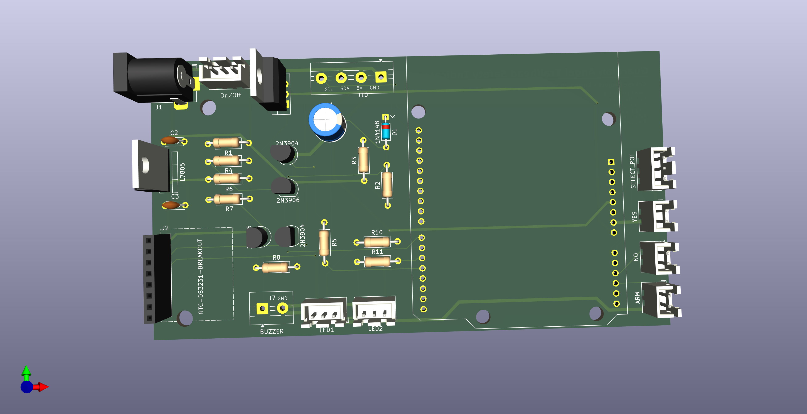

Trailhead Safety Indicator
A low-power embedded system where the main engineering challenge was power architecture: staying asleep for weeks, then waking reliably.
Project Overview
- Collaborated with a team to design and prototype a vehicle-mounted backcountry safety device through a full product development cycle, from user research through prototyping and field testing
- Led the power electronics architecture, achieving 25-day standby life against a 20-day requirement, reducing standby current to ~5mA
- Designed, built, and refined multiple prototype iterations including a 3D printed enclosure and multiple vehicle mounting systems
- Validated usability through structured user clinics, achieving 80% correct alert-state identification and 70% device visibility at 75ft
Outcome
A fully integrated trailhead safety indication device to alert nearby individuals about possible missing persons
